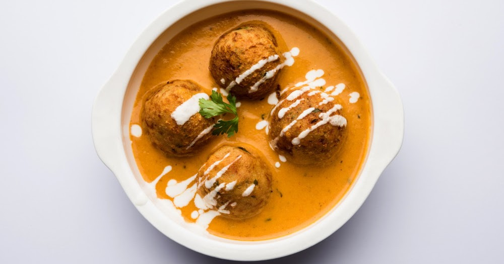

Malai Kofta
Ingredients For Gravy:
- large Tomatoes (should not be sour)
- 3 medium Onions
- 4 Cashew nuts, soaked in water for 20 minutes
- 2-inch piece of Cinnamon
- 2 Cloves
- 1/2 teaspoon Cumin Seeds
- 1 tablespoon Green Chilli Ginger Paste (freshly made)
- 1 teaspoon Coriander Powder
- 1/2 teaspoon Red Chilli Powder
- 2 teaspoons Sugar
- Salt to taste
- 3 tablespoons Oil
Ingredients for Kofta:
3 large Potatoes (boiled, peeled and mashed)
8-10 Cashew nuts, roughly chopped
14-16 Golden Raisins or Black Raisins, optional
1/4 cup Homemade Fresh Cream, freeze for 6 hours
4 tablespoons Corn Flour
Salt to taste
Oil for deep frying
Preparations
- Make tomato puree – you can choose one of the following two options that suits you best as it does not affect the final taste of the curry; it only affects the texture of gravy. The first method (blanch method) gives smooth texture to the gravy and is used in this recipe. The second option (crush in food processor) gives little coarse texture and takes less time to prepare the puree.
- Make onion puree – follow this onion puree recipe. You can also make the onion puree (without blanch method) by crushing the onion in a small jar of mixer grinder. However, it will take more time to cook compared to blanched onion puree.
- Make cashew nut paste by crushing soaked cashew nuts with 2 tablespoons of water using mixer-grinder.
- This recipe requires semi frozen fresh cream and uses malai (prepared at home from milk). First, put malai in freezer for 6 hours to make it solid and then remove it from freezer 15 minutes before making koftas balls so that it softens a bit and can be easily scraped/scooped with spoon or cut with a knife for easy stuffing. Make sure that cream is not in liquid state, otherwise you cannot stuff koftas with it easily and they may break while deep frying. (If you find this to be difficult then read Tips and Variation given below for fresh cream alternatives.)